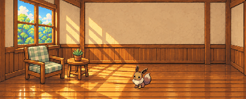

Один уголок, два кресла
Кресло меняется автоматически. Иви — исходная анимация Black & White. Остальная комната, столик и растение сохраняются.

Малый технический пилот для оценки цельности. Приложение не менялось; полный набор зон ещё не построен.